Loading ...
|
3-1-4-2
|
Ecuador | 0 | - | 0 | Curaçao |
5-4-1
|
| HT 0-0 | ||||||
|
FIFA World CupSunday 21 June 2026
|
||||||
- Venue
- Kansas City Stadium
- Attendance
- 68,598
- Referee
- Ning Ma
Yellow card38'
J. Alcívar
Substitution46'
J. Alcívar
K. Rodríguez
Substitution70'
P. Estupiñán
N. Angulo
Substitution83'
A. Franco
Á. Preciado
Substitution89'
J. Yeboah
J. Caicedo
Whistle45+5'
45+5'
Yellow card39'
L. Bacuna
Yellow card53'
J. Bacuna
Yellow card56'
L. Comenencia
Substitution75'
J. Bacuna
K. Gorré
Yellow card75'
J. Gaari
- 2
Substitution76'
D. Fonville
R. van Eijma
T. Chong
J. Margaritha
Substitution83'
J. Locadia
G. Kastaneer
Substitution84'
L. Comenencia
G. Roemeratoe
Yellow card90+1'
G. Kastaneer
Ecuador | |
|---|---|
Goalkeeper | |
| 1 | H. Galíndez |
Defender | |
| 3 | P. Hincapié |
| 6 | W. Pacho |
| 21 | A. Franco 83' |
Midfielder | |
| 5 | J. Alcívar 38'46' |
| 7 | P. Estupiñán 70' |
| 9 | J. Yeboah 89' |
| 15 | P. Vite |
| 23 | M. Caicedo |
Forward | |
| 13 | E. Valencia |
| 19 | G. Plata |
Substitutes | |
| 11 | K. Rodríguez 46' |
| 16 | J. Caicedo 89' |
| 17 | Á. Preciado 83' |
| 20 | N. Angulo 70' |
Curaçao | |
Goalkeeper | |
| 1 | E. Room |
Defender | |
| 3 | J. Gaari 75' |
| 5 | S. Floranus |
| 18 | A. Obispo |
| 20 | J. Brenet |
| 24 | D. Fonville 76' |
Midfielder | |
| 7 | J. Bacuna 53'75' |
| 8 | L. Comenencia 56'84' |
| 10 | L. Bacuna 39' |
| 21 | T. Chong 76' |
Forward | |
| 9 | J. Locadia 83' |
Substitutes | |
| 4 | R. van Eijma 76' |
| 6 | G. Roemeratoe 84' |
| 14 | K. Gorré 75' |
| 16 | J. Margaritha 76' |
| 19 | G. Kastaneer 83'90+1' |


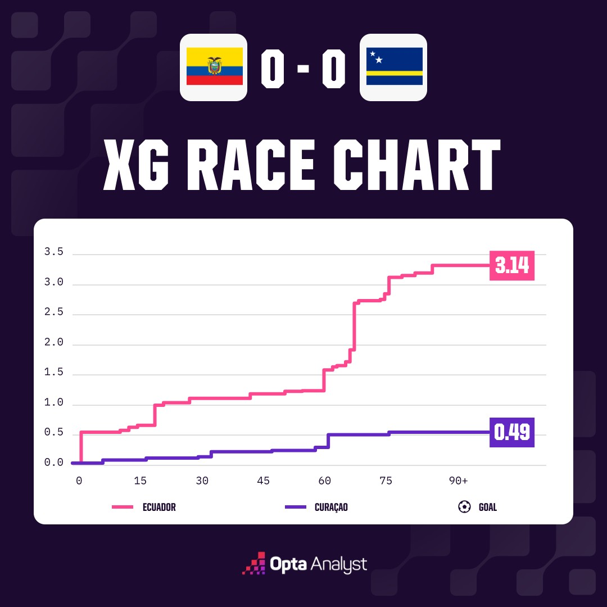
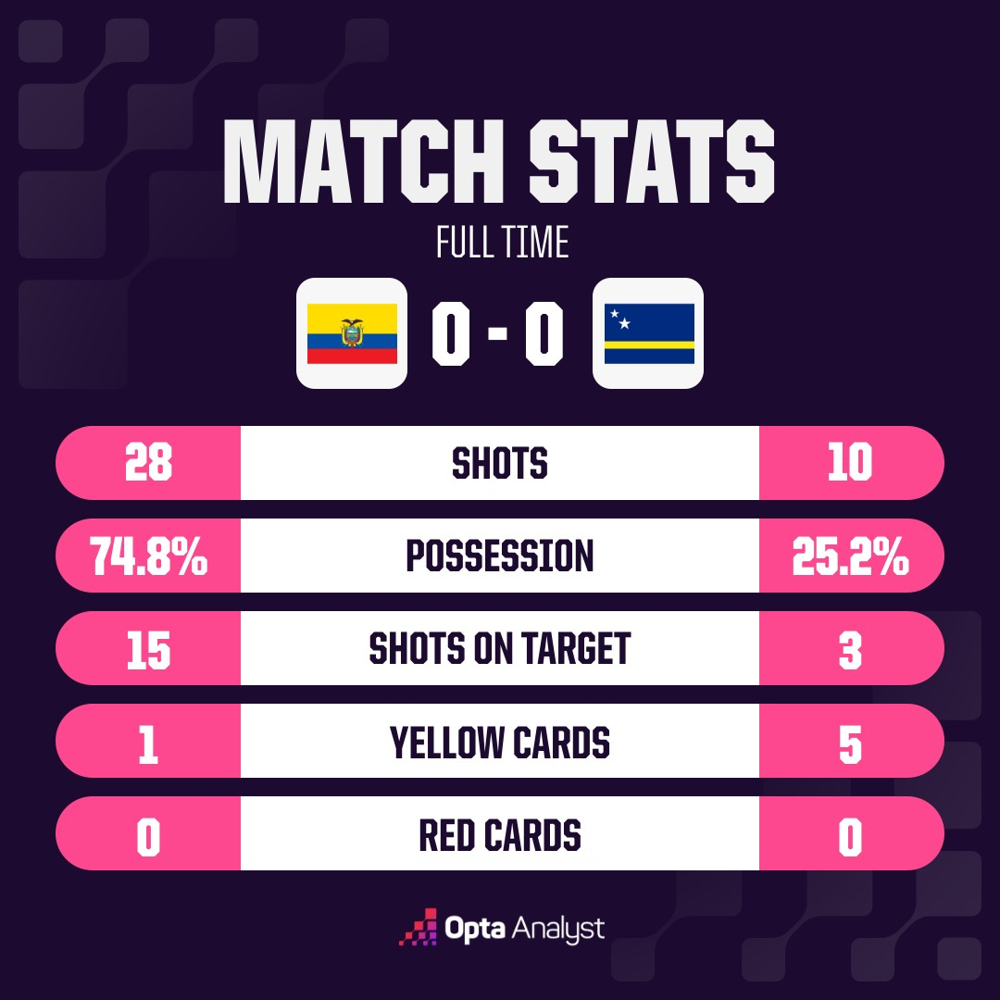
97'
Ecuador have failed to win in their last 4 games in the FIFA World Cup, their longest winless streak in the competition (since at least 1965/1966).
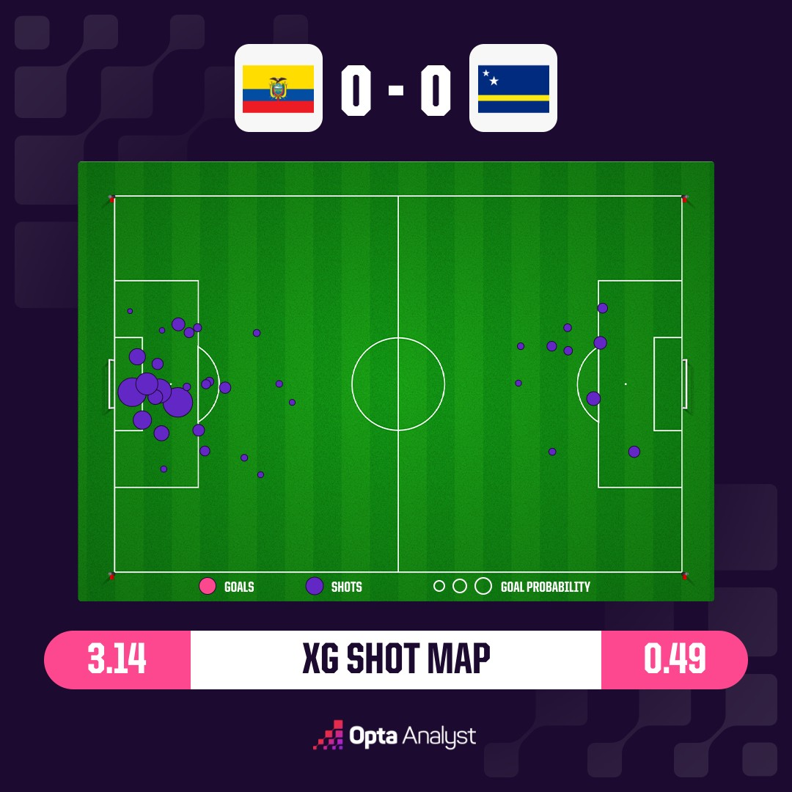
90+6'
That's it! The referee blows the whistle and we have reached full-time. The final score at Kansas City Stadium is Ecuador 0-0 Curaçao.
90+5'
Corner! Ecuador are pushing for a goal and now they have an opportunity from this set-piece.
90+1'
BOOKING! Yellow card for Gervane Kastaneer, who is penalised for a foul. The referee waves away their remonstrations, and now they will have to be careful.
90+1'
Good play from Ángelo Preciado, who draws a foul from Gervane Kastaneer to hand Ecuador a free-kick in a dangerous position. Will they create something from this set-piece?
90+1'
Corner! Ecuador are pushing for a goal and now they have an opportunity from this set-piece.
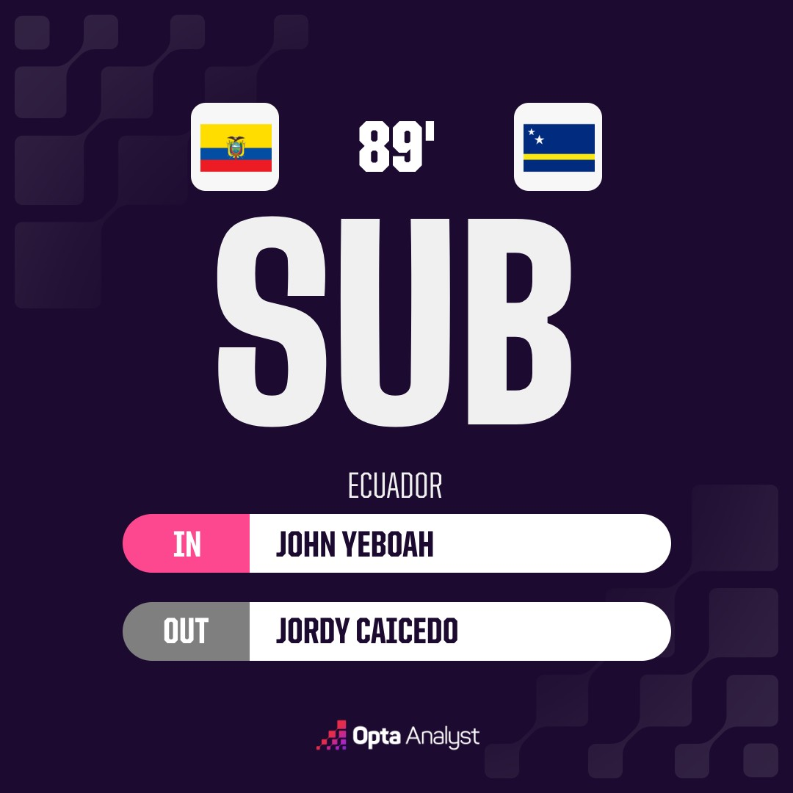
89'
Substitution! Jordy Caicedo replaces John Yeboah for Ecuador as the manager shuffles the pack. Can Jordy Caicedo make an impression as this match continues?
84'
A chance goes begging as Enner Valencia gets off a shot that does not hit the target. They might have done better with that one, but instead it is a goal-kick to Curaçao.
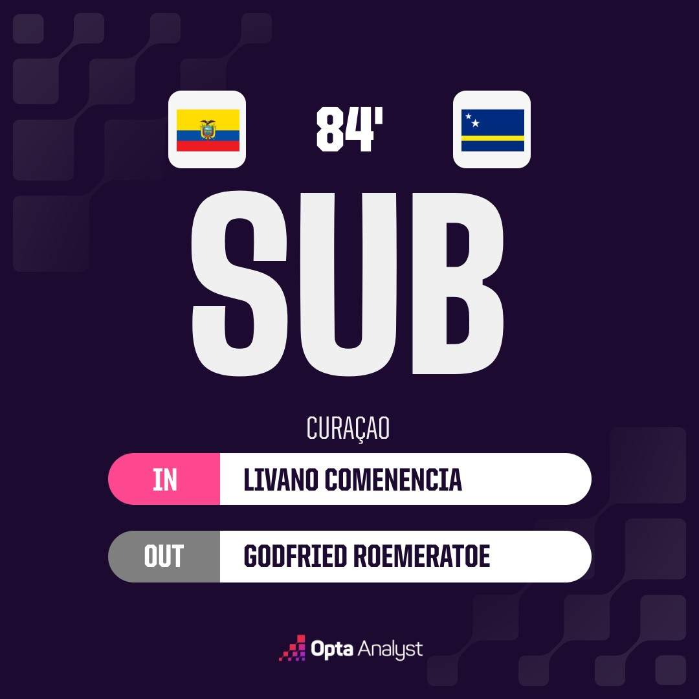
84'
Curaçao are making a tactical change. Livano Comenencia is leaving the field and in their place comes Godfried Roemeratoe – we will soon see if this switch has the desired impact.
83'
That is bad news for Curaçao, as they suffer an injury blow, with Jürgen Locadia having had to receive treatment before then making their way off the pitch. Gervane Kastaneer is coming on.
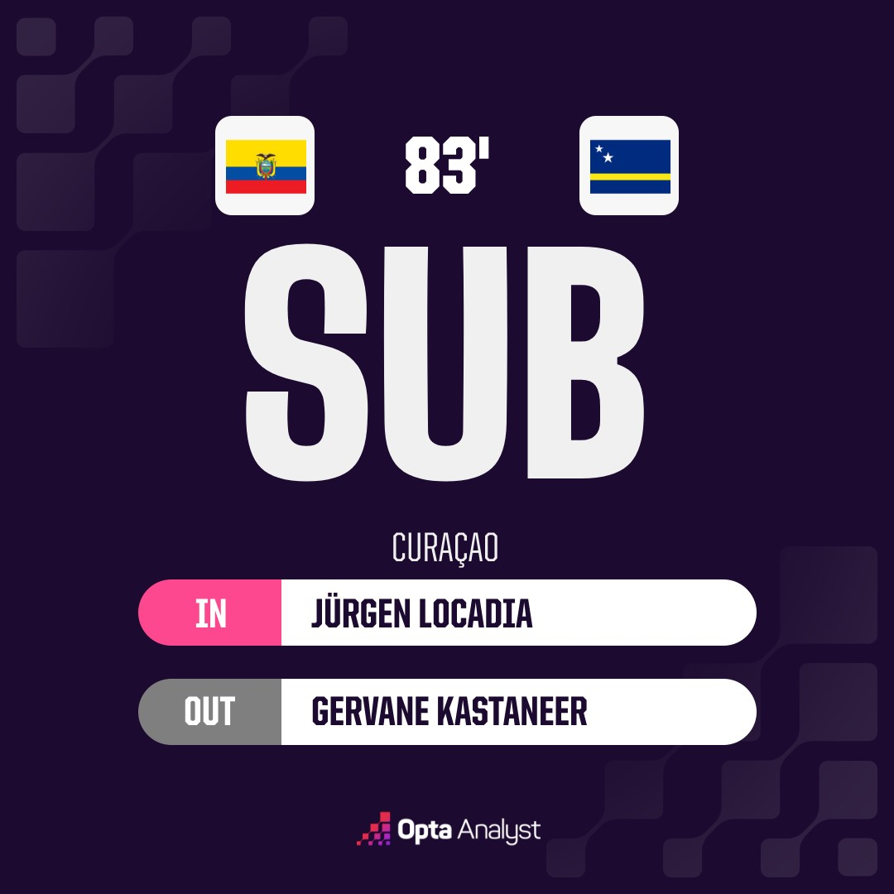
83'
A substitution for Ecuador sees Alan Franco replaced by Ángelo Preciado. There does not appear to be any obvious sign of an injury, so that is a tactical switch.
81'
Decision changed! After a VAR check, the decision has been overturned.
81'
We are going to VAR. The game has stopped for now with the assistant referee in the video booth now set to review the incident. Will the decision be altered?
80'
Can Curaçao survive here? They will have some defending to do after the ball is turned behind for a corner kick. Will Ecuador take this opportunity and grab the goal they have been pushing for?
80'
That was hopeful! A bit of a punt from Pedro Vite, who goes for goal from distance, but Eloy Room makes the save.
77'
Chance! A shot from inside the area from Enner Valencia was heading in, but Eloy Room makes a fine stop to keep it out. A big save from the Curaçao shot-stopper!
76'
Tahith Chong’s match is over as Curaçao decide to make a substitution. Jearl Margaritha enters the field in what looks like a tactical change.
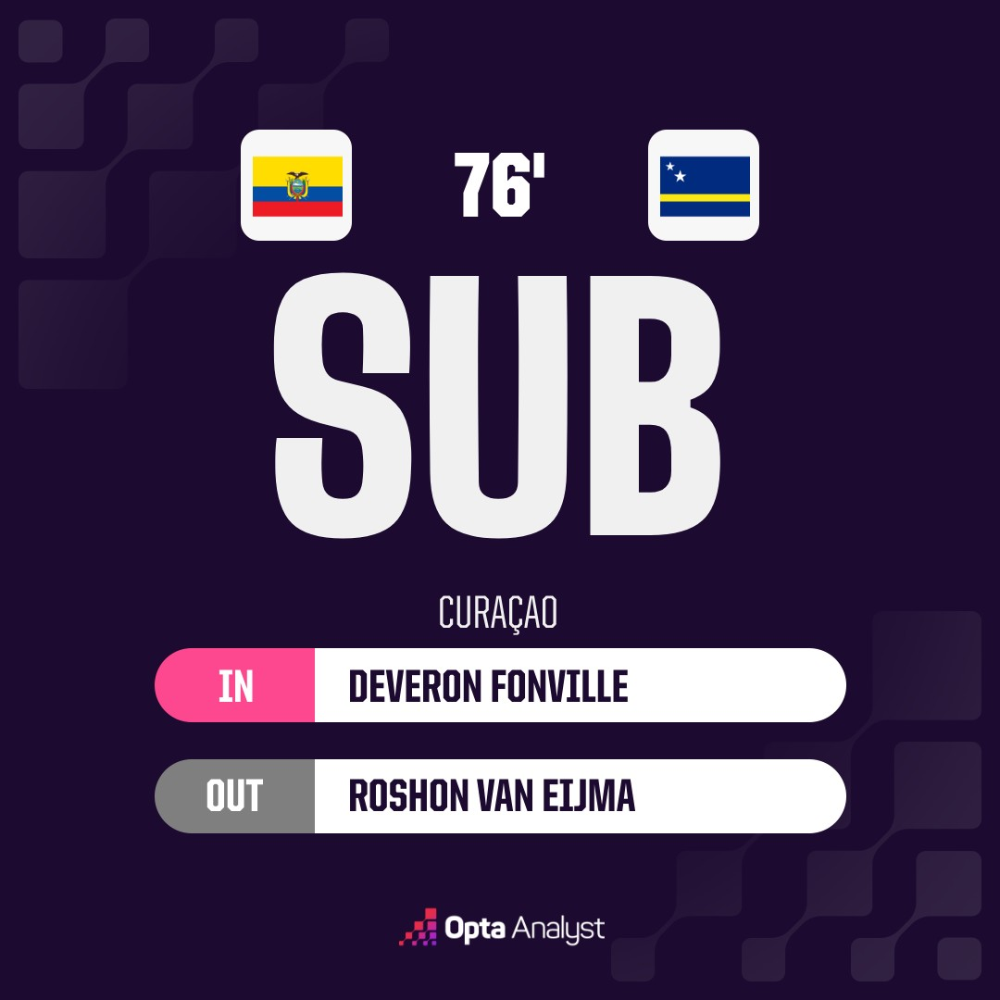
76'
Entering the final stages of this contest, let’s check on the possession stats for each team. It is Ecuador who have had the more of the ball, with 73.21%, while Curaçao have had to settle for 26.79%. The score is 0-0.
76'
Curaçao are making a tactical change. Deveron Fonville is leaving the field and in their place comes Roshon van Eijma – we will soon see if this switch has the desired impact.
75'
Juninho Bacuna’s match is over as Curaçao decide to make a substitution. Kenji Gorré enters the field in what looks like a tactical change.
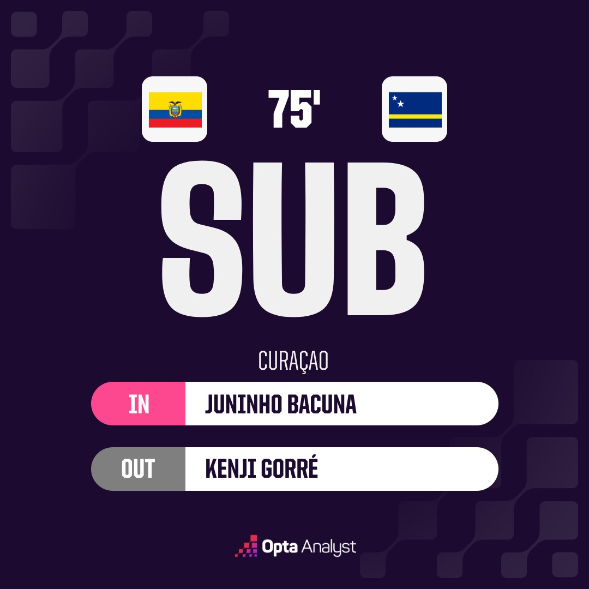
75'
A yellow card for Curaçao's Juriën Gaari. They will have to walk a tightrope for the rest of this match, and Ecuador will likely look to target them and draw a second bookable offence.
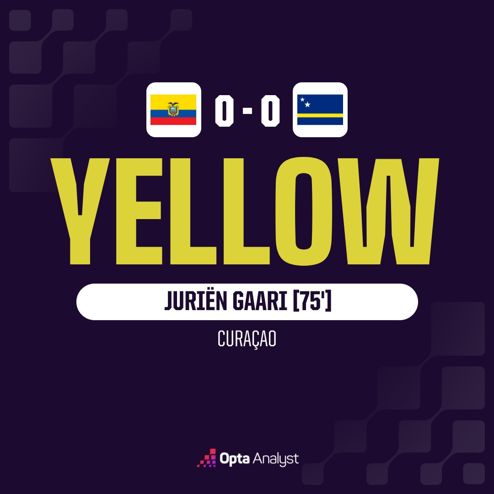
75'
Free-kick! A foul from Juriën Gaari on Kevin Rodríguez. It is well away from Curaçao’s goal, so it is unlikely to result in a chance for Ecuador.
74'
Save! A long-range strike from Juninho Bacuna was heading in, but Hernán Galíndez got to it to parry it away from danger.
74'
HUGE CHANCE GOES BEGGING! What a miss that is from Piero Hincapié, who looked all set to score a goal that their team need, but instead fails to direct their attempt into the back of the net. That was a big, big opportunity for Ecuador.
73'
John Yeboah's effort is deflected out for a corner. Can Ecuador make anything of this set-piece?
73'
Pedro Vite has created 5 chances, his highest total in a single match in the FIFA World Cup.
72'
Save! A long-range strike from Nilson Angulo was heading in, but Eloy Room got to it to parry it away from danger.
70'
Pervis Estupiñán’s match is over as Ecuador decide to make a substitution. Nilson Angulo enters the field in what looks like a tactical change.
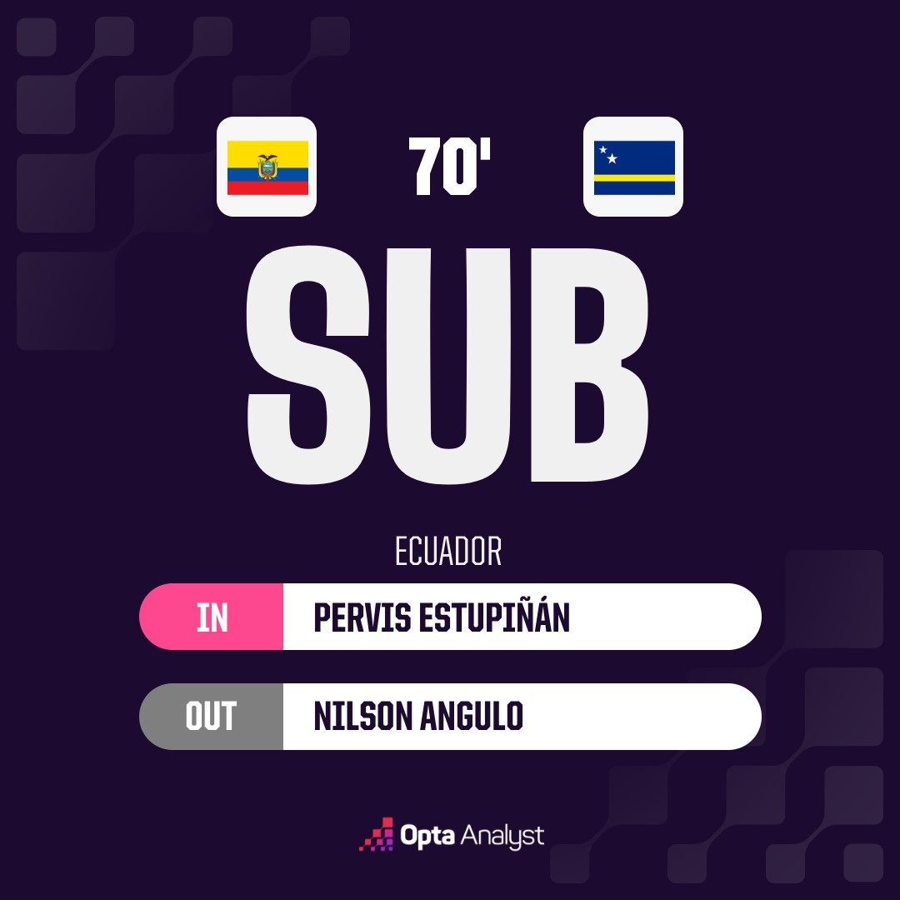
67'
Pedro Vite goes in on Tahith Chong and concedes a foul. The free-kick is not in a particularly dangerous area from Ecuador’s viewpoint, though.
67'
That is a disappointing effort from Kevin Rodríguez, who went for glory but got their attempt wrong, and the shot sailed off target. A frustrating moment for Ecuador.
66'
SAVED! Good work from Eloy Room, who stands firm to deny Willian Pacho, who managed to get a shot away from inside the Curaçao area.
66'
Enner Valencia has attempted 5 shots, the first time he has attempted at least 5 shots in a match in the FIFA World Cup since facing Netherlands on 25th November 2022 (5 shots).
66'
WHAT A MISS! Oh dear, oh dear, that is an awful attempt from Enner Valencia, as a huge chance for Ecuador to score the goal they need goes begging. What a let off for Curaçao, though. They will have to defend better than that from here on out!
66'
Chance! A shot from inside the area from Kevin Rodríguez was heading in, but Eloy Room makes a fine stop to keep it out. A big save from the Curaçao shot-stopper!
66'
With 25 minutes left to play, this game is about to go into its final quarter. So, that seems a good chance to check on the shot count. Ecuador have had 17 efforts, with 10 of those hitting the target. Curaçao, on the other hand, have had 9 shots, getting 2 of those attempts on target.
65'
Eloy Room has made 10 saves, the first time a goalkeeper has made at least 10 saves in a match in the FIFA World Cup since Dominik Livaković for Croatia against Brazil on 9th December 2022 (11 saves).
65'
MISS! How has that not gone in? A complete lack of composure shown from Enner Valencia, who squanders a golden chance for Ecuador, whose coach looks on frustrated from the touchline. A real let off for Curaçao!
64'
MISS! The score remains 0-0, with Curaçao relieved after Ecuador’s Kevin Rodríguez goes for goal but sends their attempt off target. Not one to write home about, that one.
64'
Corner! The ball goes behind and now Ecuador will aim to deliver a good ball into the penalty area and test that Curaçao defence, which has been frustrating them in recent minutes.
63'
Plenty of the ball in the last quarter-of-an-hour of this match for Ecuador, but still Curaçao stand firm, despite having had only 32.31% of the ball in that period. Can Ecuador make their possessional dominance count?
62'
A chance goes begging as Kevin Rodríguez gets off a shot that does not hit the target. They might have done better with that one, but instead it is a goal-kick to Curaçao.
61'
Chance! A shot from inside the area from Enner Valencia was heading in, but Eloy Room makes a fine stop to keep it out. A big save from the Curaçao shot-stopper!
60'
BLOCKED! That was close. Jürgen Locadia got off a shot, which was heading in, but Moisés Caicedo was on hand to make a vital intervention. Great block!
60'
Save! A big stop from Hernán Galíndez, who reacts to keep out Livano Comenencia's attempt from inside the area.
60'
Save! A long-range strike from Leandro Bacuna was heading in, but Hernán Galíndez got to it to parry it away from danger.
59'
HUGE CHANCE GOES BEGGING! What a miss that is from Gonzalo Plata, who looked all set to score a goal that their team need, but instead fails to direct their attempt into the back of the net. That was a big, big opportunity for Ecuador.
59'
Gonzalo Plata has attempted 5 shots, his highest total in a single match in the FIFA World Cup.
59'
MISS! The score remains 0-0, with Curaçao relieved after Ecuador’s Piero Hincapié goes for goal but sends their attempt off target. Not one to write home about, that one.
57'
That is a disappointing effort from Leandro Bacuna, who went for glory but got their attempt wrong, and the shot sailed off target. A frustrating moment for Curaçao.
56'
The referee goes to their pocket and pulls out a yellow card, which is brandished in the direction of Livano Comenencia. Will they be able to avoid a second booking?
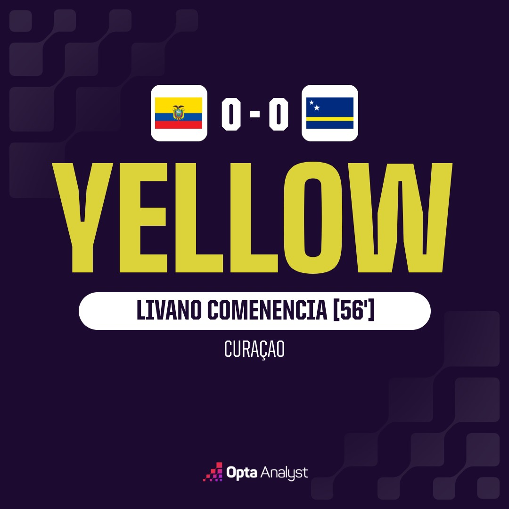
56'
Livano Comenencia goes in on Pedro Vite and concedes a foul. The free-kick is not in a particularly dangerous area from Curaçao’s viewpoint, though.
55'
OVERTURNED! VAR has decided to intervene here, and after that comprehensive check, the referee’s decision has been overturned.
55'
Decision checked. VAR is going to look at this incident again, so this decision may well not stand. Let’s wait and see what the officials do here.
54'
A chance goes begging as Gonzalo Plata gets off a shot that does not hit the target. They might have done better with that one, but instead it is a goal-kick to Curaçao.
53'
Yellow card! Juninho Bacuna will have to be careful from now on after they are cautioned.
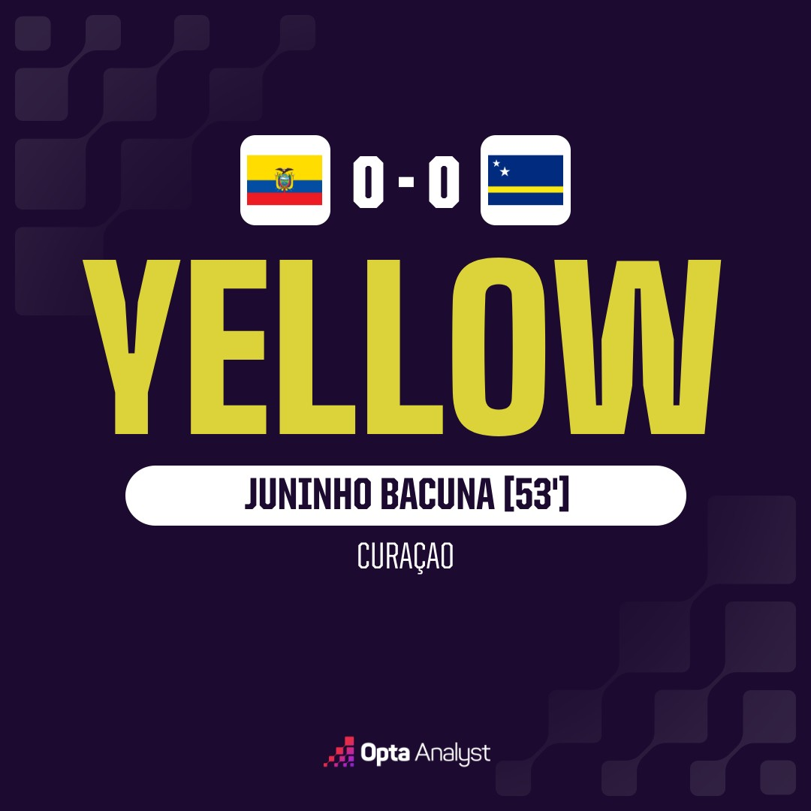
53'
Good play from Piero Hincapié, who draws a foul from Juninho Bacuna to hand Ecuador a free-kick in a dangerous position. Will they create something from this set-piece?
52'
Foul! A free-kick now in a dangerous area for Ecuador, after Kevin Rodríguez is fouled by Juriën Gaari. Can Ecuador make the most of this opportunity?
50'
A chance goes begging as Gonzalo Plata gets off a shot that does not hit the target. They might have done better with that one, but instead it is a goal-kick to Curaçao.
50'
Moisés Caicedo goes for goal with a strike from distance, but Eloy Room is able to watch it all the way and make the save. A bit of a tester, there.
46'
A substitution for Ecuador sees Jordy Alcívar replaced by Kevin Rodríguez. There does not appear to be any obvious sign of an injury, so that is a tactical switch.
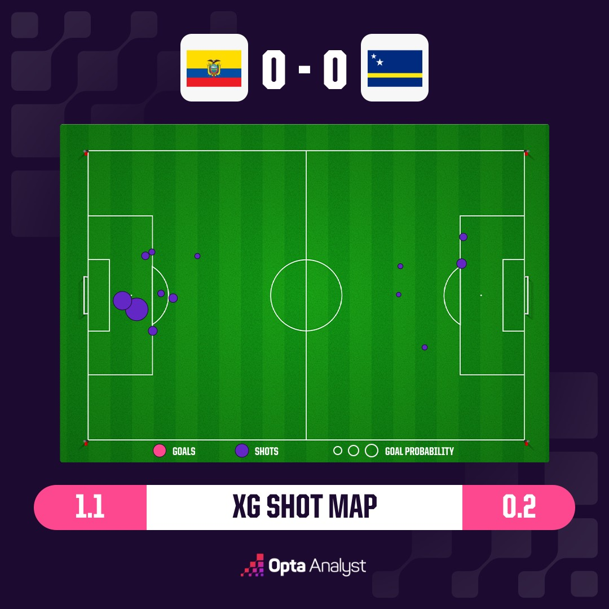
45+51'
In the last 15 minutes, it is Ecuador who have dominated the ball, having seen 80.33% of the possession, yet they have not been able to go and turn that into a goal just yet, with their opponents standing firm.
45+51'
Not much goalmouth action to speak of in this period of the game, with no attempts made from either side. This game could spark at any moment, however. It is Ecuador who have had more of the ball, controlling 83 per cent possession in the last 10 minutes.
45+5'
Half-time! The referee blows the whistle and it is time for the interval. As we reach the break it is Ecuador 0-0 Curaçao at Kansas City Stadium.
45+4'
Livano Comenencia goes in on Enner Valencia and concedes a foul. The free-kick is not in a particularly dangerous area from Curaçao’s viewpoint, though.
45+3'
This could be a chance for Curaçao, after Pervis Estupiñán fouls Jürgen Locadia, handing them a free-kick in a threatening area. A good set-piece from here could really test the Ecuador defense!
45+3'
Ecuador have started the second half exactly as they finished the first - patient build-up play with 20+ passes in that move. They're clearly in no rush to force things.
45+3'
Ecuador have had plenty of the ball in the last 15 minutes, with 79.80% possession compared to just 20.20 % for their opponents. However, there’s not been any goal to come from that possessional dominance just yet.
45+2'
A chance goes begging as Livano Comenencia gets off a shot that does not hit the target. They might have done better with that one, but instead it is a goal-kick to Ecuador.
45+1'
A free-kick to Curaçao, as Pervis Estupiñán goes in and fouls Juriën Gaari. However, Ecuador will not mind giving one away in this area too much, with plenty of distance to their goal.
42'
SHOT! John Yeboah manages to get a shot off from inside the area, but although it was heading in, they cannot get enough on it to beat Eloy Room, who makes the save.
41'
Curaçao have not had a shot on target so far in this game.
40'
A rash challenge from Jürgen Locadia, who sends Piero Hincapié tumbling, giving Ecuador a free-kick. It is not in a threatening position, but it gives them a chance to get back on the ball.
39'
That is a booking for Leandro Bacuna, who has received their first yellow card. They are not happy with the decision, but it is done now, and they will have to be careful for the rest of this game.
39'
A free-kick to Ecuador, as Leandro Bacuna goes in and fouls Gonzalo Plata. However, Curaçao will not mind giving one away in this area too much, with plenty of distance to their goal.
38'
BOOKING! Yellow card for Jordy Alcívar, who is penalised for a foul. The referee waves away their remonstrations, and now they will have to be careful.
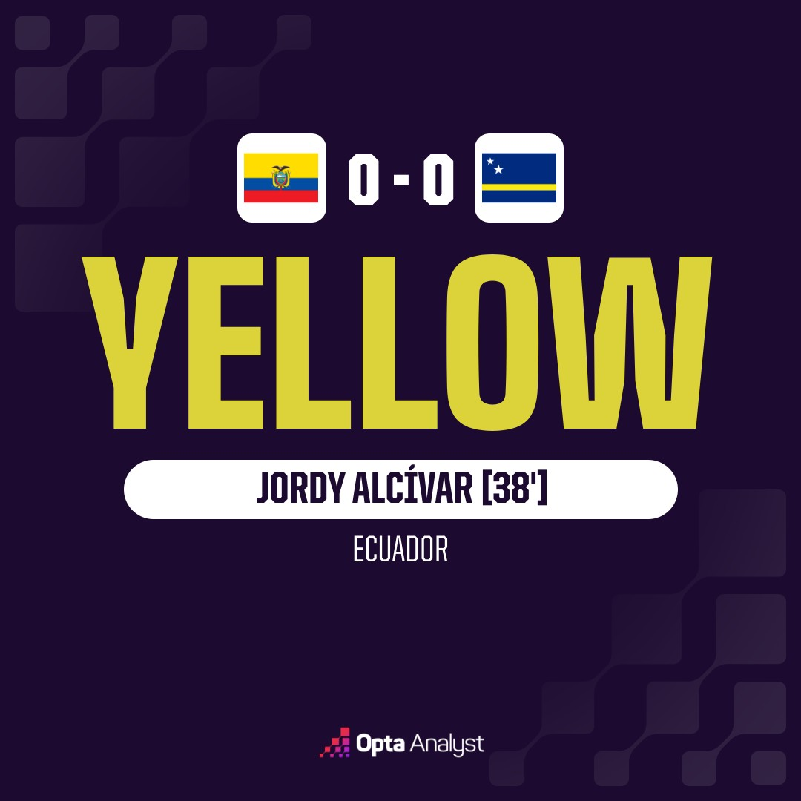
38'
Jordy Alcívar goes in on Tahith Chong and concedes a foul. The free-kick is not in a particularly dangerous area from Ecuador’s viewpoint, though.
33'
In the last 15 minutes, it is Ecuador who have dominated the ball, having seen 65.00% of the possession, yet they have not been able to go and turn that into a goal just yet, with their opponents standing firm.
33'
Shot blocked! Juninho Bacuna unleashes an attempt at goal, but the ball does not reach its target thanks to Willian Pacho, who makes a solid block to stem the danger – for now.
32'
A foul from Piero Hincapié on Tahith Chong sees Curaçao win a free-kick, but it is not in a dangerous position, so Ecuador should be confident they can defend it easily enough.
29'
A rash challenge from Alan Franco, who sends Deveron Fonville tumbling, giving Curaçao a free-kick. It is not in a threatening position, but it gives them a chance to get back on the ball.
28'
Eloy Room has made 5 saves, his highest total in a single match in the FIFA World Cup.
28'
SAVE! A shot from outside the box by Ecuador Gonzalo Plata was heading in, but Curaçao Eloy Room keeps it out with a smart stop.
24'
A free-kick to Curaçao, as Willian Pacho goes in and fouls Juninho Bacuna. However, Ecuador will not mind giving one away in this area too much, with plenty of distance to their goal.
22'
Leandro Bacuna goes in on Pedro Vite and concedes a foul. The free-kick is not in a particularly dangerous area from Curaçao’s viewpoint, though.
22'
MISS! The score remains 0-0, with Curaçao relieved after Ecuador’s Jordy Alcívar goes for goal but sends their attempt off target. Not one to write home about, that one.
20'
WHAT A MISS! Oh dear, oh dear, that is an awful attempt from Enner Valencia, as a huge chance for Ecuador to score the goal they need goes begging. What a let off for Curaçao, though. They will have to defend better than that from here on out!
18'
That is a disappointing effort from Livano Comenencia, who went for glory but got their attempt wrong, and the shot sailed off target. A frustrating moment for Curaçao.
16'
Gonzalo Plata goes for goal with a strike from distance, but Eloy Room is able to watch it all the way and make the save. A bit of a tester, there.
16'
Plenty of the ball in the last quarter-of-an-hour of this match for Ecuador, but still Curaçao stand firm, despite having had only 17.13% of the ball in that period. Can Ecuador make their possessional dominance count?
14'
MISS! A shot from Pedro Vite ends up being off target. They might have done a bit better with that one, but it remains Ecuador 0-0 Curaçao.
13'
That’s offside! A switched-on defensive line from Ecuador, as they step up at the right time to catch Jürgen Locadia offside, and the assistant referee’s flag is up.
12'
SAVED! Good work from Eloy Room, who stands firm to deny John Yeboah, who managed to get a shot away from inside the Curaçao area.
10'
The Ecuador defence steps up in time and there is a frustration for Jürgen Locadia, who thought they were through until the flag goes up to signal offside.
8'
No luck! Sherel Floranus takes on a shot that, had they got it right, might have been set to test the goalkeeper, but instead it is sent off target and Ecuador come away unscathed.
6'
No luck – it’s offside! Enner Valencia looked to dart in behind and get on the end of a pass, yet they just went too early, and the flag is up to signal offside.
5'
It’s been tight so far, and Curaçao are making sure it stays that way with strong defensive discipline and well-timed clearances.
3'
WHAT A MISS! Oh dear, oh dear, that is an awful attempt from Enner Valencia, as a huge chance for Ecuador to score the goal they need goes begging. What a let off for Curaçao, though. They will have to defend better than that from here on out!
1'
We are under way as Ecuador kick off at Kansas City Stadium. Let's hope an entertaining contest is in store.
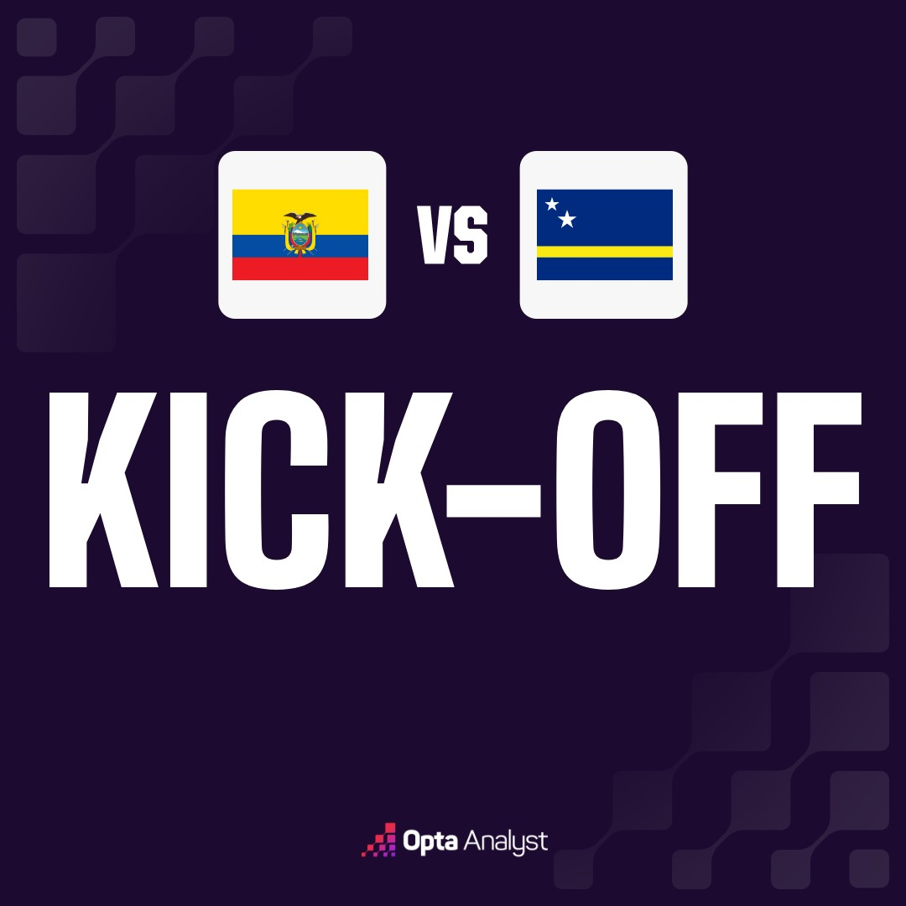
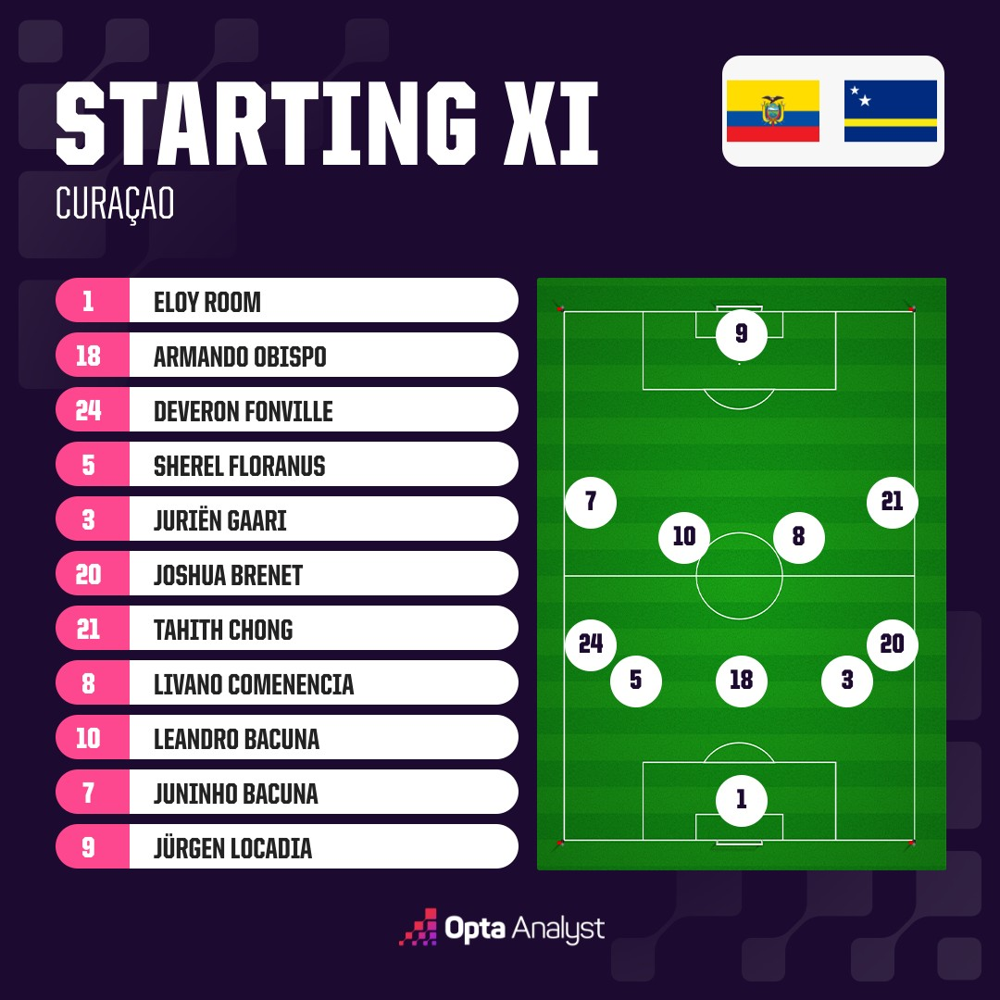
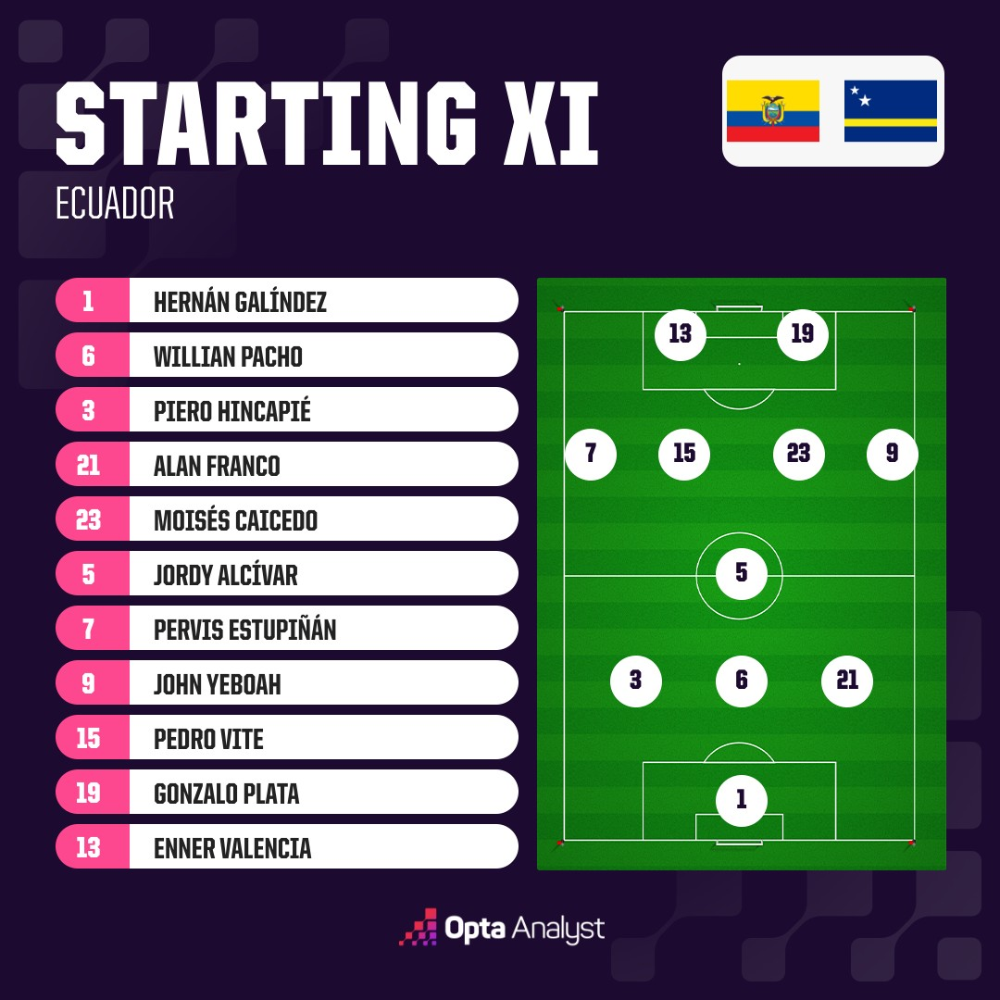
There have been fewer than 3 goals scored in total in each of Ecuador's last 6 games
Ecuador face Curaçao on Saturday at Kansas City Stadium in a meeting of teams who have yet to earn a win early in the FIFA World Cup group stage.
Ecuador slumped 1-0 against Côte d'Ivoire in their opening World Cup group stage match on June 14. In five games this year, they have two wins, two draws, and one loss.
Curaçao suffered a 7-1 defeat against Germany in their opening World Cup group stage game, a June 14 clash at Houston Stadium. Livano Comenencia was the only player to net in the loss. In 2026, they have won one and lost four.
Ecuador and Curaçao are third and fourth in the group, respectively, level on zero points. Germany are sitting atop the group on three points. Côte d'Ivoire are second, also on three points.
Ecuador have yet to find the net in the World Cup this season. With a goal against Germany, Comenencia is the early leading World Cup scorer for Curaçao.
In their last six matches in all competitions, Ecuador have won three, drawn two and lost one. The Ecuadorean side scored nine and conceded four over that stretch, scoring first in four of the six contests. They had three first-half goals, while their opponents netted once in the first 45 minutes. Curaçao have won one, drawn one and lost four in their last six. The Curaçao side scored seven and conceded 18 over that period, netting first in two of the six. They had two goals in the first half, while their opponents netted six times before the break.
-
General
Possession 74.6% 74.61725.38325.4% Possession lost in defensive half 15 156262 Possession lost in middle third 39 394343 Duels 108 108106106 Duels success rate 47.2% 47.22249.05749.1% Aerial duels 34 343434 Aerial duels won 44.1% 44.11855.88255.9% Successful dribbles 8 899 Fouls won 10 1077 Offsides 1 122 Corner awarded 9 900 -
Distribution
Passes 644 644227227 Long passes 34 345050 Long passes proportion (%) 5.3% 5.2822.02622.0% Passing accuracy 90.2% 90.21770.04470.0% Passes in opponents' half 431 431115115 Passing accuracy in opponents' half (%) 87.5% 87.47160.8760.9% Total passes in the final third 235 2355252 Passing accuracy in final third (%) 81.3% 81.27761.53861.5% Forward passes 380 380161161 Forward passes (%) 59.0% 59.00670.92570.9% Through balls 3 300 Final third entries 100 1002828 Penalty area entries 41 4199 Total open play crosses 22 2200 Crosses 33 3311 Crossing accuracy 33.3% 33.333100100.0% -
Attack
Goals 0 000 Shots 27 271010 Shots on target 15 1533 Blocked shots 2 233 Headed shots 8 800 Shots outside the box 6 666 Shots inside the box 21 2144 Shots accuracy excluding blocked shots 60.0% 6042.85742.9% Shooting accuracy 55.6% 55.5563030.0% Key Passes 23 2399 -
Defence
Tackles 19 191717 Tackles success rate 57.9% 57.89541.17641.2% Clearances 17 173232 Interceptions 7 788 Recoveries 56 565757 Attacking third recovery 5 522 Defensive third recovery 23 234545 Midfield third recovery 28 281010 Recoveries in attacking half (%) 8.9% 8.9293.5093.5% -
Discipline
Fouls conceded 7 71010 Yellow cards 1 155 Red cards 0 000